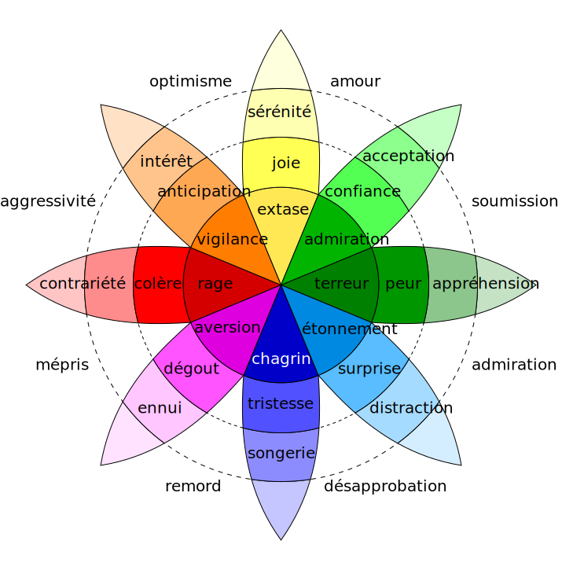

Debriefing
Ce document n'est pas un document officiel de l'association
lafresqueduclimatjp.cadiat.be
Que ressentez-vous ?
Quelle carte vous a marqué ?

Shown are national production-based emissions in 2020. Production-based emissions measure CO₂ produced domestically from fossil fuel combustion and cement, and do not adjust for emissions embedded in trade (i.e., consumption-based). Values may not sum to 100% due to rounding.
Les valeurs affichées sont les émissions nationales de 2020 dues à la production. Les émissions dues à la production mesurent la production domestique de CO₂ résulatnat de la combustion d'énergies fossiles et de la production de ciment et ne sont pas ajustées pour les émissions dues à l'échange de biens. La somme des valeurs pourrait ne pas faire 100% à cause des arrondis.
Source: ourworldindata.comShown are national production-based emissions during the period 1751-2020. Production-based emissions measure CO₂ produced domestically from fossil fuel combustion and cement, and do not adjust for emissions embedded in trade (i.e., consumption-based). Values may not sum to 100% due to rounding.
Émissions de dioxide de carbone (CO2) sur la période 1751-2020. Les valeurs affichées sont les émissions nationales de 2020 dues à la production. Les émissions dues à la production mesurent la production domestique de CO₂ résulatnat de la combustion d'énergies fossiles et de la production de ciment et ne sont pas ajustées pour les émissions dues à l'échange de biens. La somme des valeurs pourrait ne pas faire 100% à cause des arrondis.
Source: ourworldindata.com
 Source: ourworldindata.com
Source: ourworldindata.com
 Source: ourworldindata.org
Source: ourworldindata.org


- Calculer mon empreinte carbone (Agence Wallonne de l'Air et du Climat)
- Nos gestes climats
- Rejoignez les réseaux sociaux de la Fresque du Climat !
- Devenez animateur·trice de la fresque ! Les dates des prochaines formations en ligne sont sur https://fresqueduclimat.org/dates-formations/.
 Source: carbonbrief.org
Source: carbonbrief.org